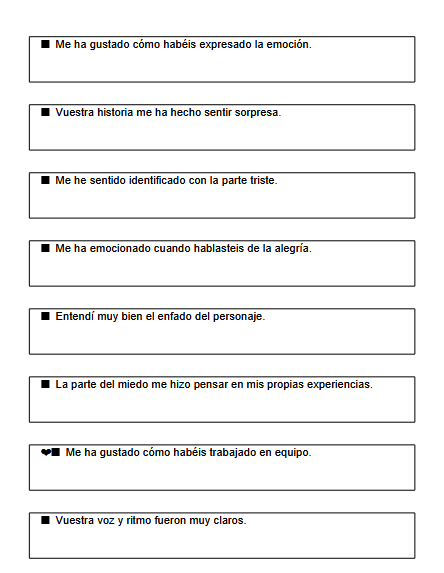
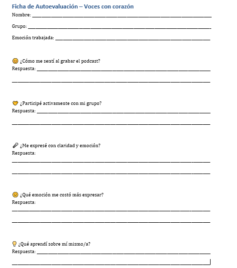

Grabamos y compartimos
Objetivo: Grabar y compartir los guiones orales en formato podcast, fomentar la escucha activa, la retroalimentación positiva y la reflexión sobre el aprendizaje emocional.
1. Grabación del podcast (20 minutos)
- Actividad: cada grupo graba su guion utilizando herramientas sencillas como la grabadora del móvil.Opcionalmente se puede utilizar Audacity. Te dejamos video tutorial para editar tu podcast con Audacity:
- Organización: mientras un grupo graba, los demás repasan o decoran su guion.
- Propósito: Desarrollar habilidades comunicativas y digitales.
2. Escucha colectiva (10 minutos)
- Actividad: Se reproducen los audios grabados en el aula.
- Recursos: Altavoces o proyector con sonido.
- Propósito: Valorar el trabajo de los compañeros y fomentar la atención activa.
3. Ronda de retroalimentación positiva (10 minutos)
- Dinámica: Cada grupo recibe comentarios positivos de sus compañeros (por ej. "Me ha gustado como habéis expresado la emoción o vuestra historia me ha hecho sentir...)
- Apoyo: Tarjetas con frases modelo para facilitar la expresión.

- Propósito: Fomentar la empatía, el respeto y el refuerzo positivo.
4. Evaluación individual y grupal (5 minutos)
- Actividad: Breve reflexión oral (por ej. "¿Qué hemos aprendido sobre nosotros/as?, ¿Qué emoción nos ha costado más expresar?¿Qué nos ha gustado del trabajo en grupo?...)
- Instrumento: Ficha de autoevaluación.
